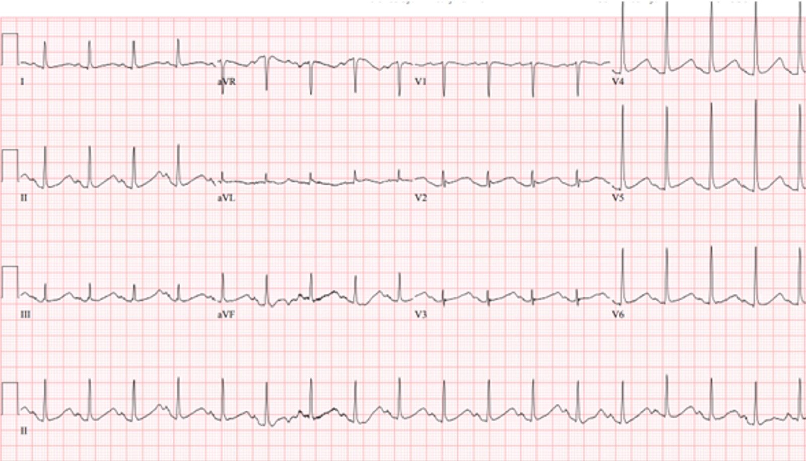
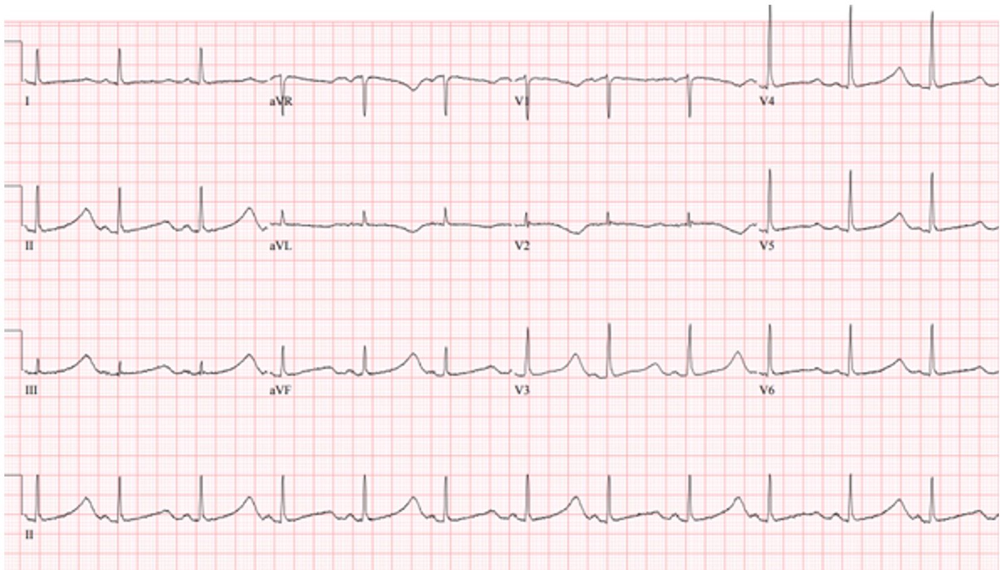
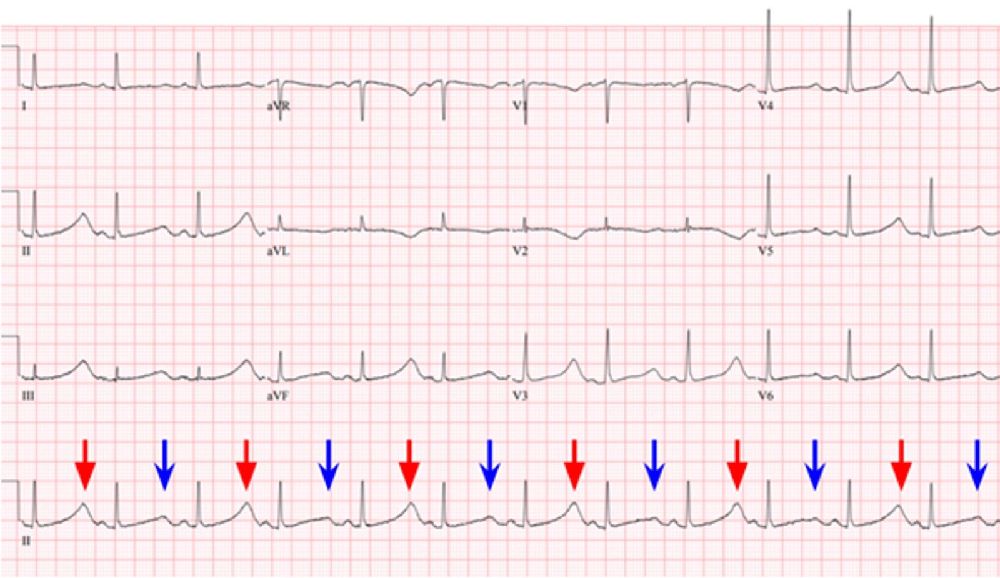
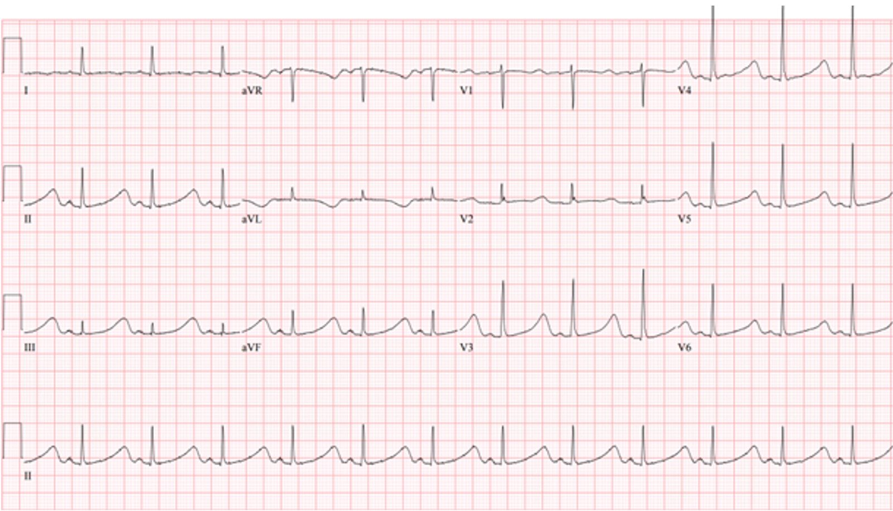
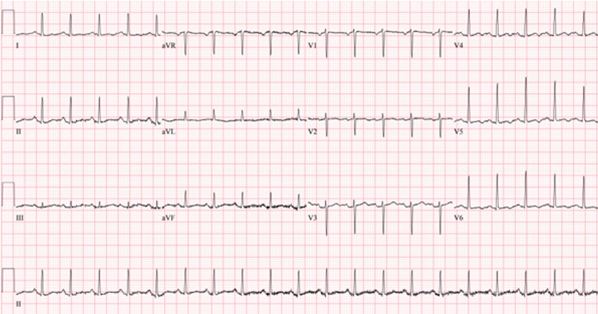

23/10/2023 — Hình ảnh sóng T này có ý nghĩa gì không?
Bản dịch tiếng Việt của bài "Does this T wave pattern mean anything?" – Dr. Smith’s ECG Blog. Giữ nguyên toàn bộ 5 hình ảnh của bản gốc.
Bài viết của Michael Doyle DO và Timothy Palmieri MD.
(Biên tập bởi Bracey, Meyers, Grauer và Smith)
= = =
Một bệnh nhân nữ khoảng 50 tuổi, có tiền sử một rối loạn nhân cách không rõ loại và rối loạn sử dụng rượu, được đội cấp cứu ngoài viện (EMS) đưa đến sau ngừng tim đã tái lập tuần hoàn tự nhiên (ROSC). Nhịp được mô tả là một nhịp QRS rộng, không đều. Theo báo cáo của EMS, tại hiện trường có tìm thấy các lọ thuốc đã mở nắp ở gần đó, gồm quetiapine, fluoxetine, hydroxyzine và gabapentin. Bệnh nhân được hồi sức thành công sau nhiều vòng hồi sinh tim phổi nâng cao (ACLS), bao gồm khử rung và amiodarone.
- Khi đến khoa cấp cứu (ED), bệnh nhân đã được đặt nội khí quản, dấu hiệu sinh tồn bình thường. Điện tâm đồ ban đầu được ghi:
= = =
Điện tâm đồ ban đầu:


Nhịp nhanh xoang kèm khoảng QT kéo dài (QTc 534 ms theo công thức Bazett). Không có thay đổi ST do thiếu máu cục bộ.
= = =
Bệnh nhân được cho magnesi theo kinh nghiệm. Nồng độ kali huyết thanh ban đầu là 3.5 mEq/L, tuy nhiên mẫu bị tan máu nên giá trị thật có thể thấp hơn kết quả báo cáo. Nồng độ calci ion hóa và magnesi huyết thanh nằm trong giới hạn bình thường.
= = =
Một điện tâm đồ được ghi lại 2 giờ sau khi bệnh nhân đến viện:


QTc kéo dài tới 722 ms, nay kèm hình ảnh sóng T luân phiên (T wave alternans).
= = =


Tôi nhắn tin gửi bản ghi này cho Smith và ông trả lời:
- “Sóng T luân phiên và QT dài. Báo trước xoắn đỉnh (Torsades de Pointes).”
Bệnh nhân được cho thêm magnesi, bắt đầu truyền liên tục magnesi, với mục tiêu bù điện giải đến mức bình thường cao. Bệnh nhân được nhập đơn vị hồi sức tích cực (ICU), nơi các điện tâm đồ tiếp theo được ghi:
= = =
Điện tâm đồ lúc 12 giờ:


QTc kéo dài, sóng T luân phiên đã hết.
= = =
Điện tâm đồ lúc 24 giờ:


Nhịp nhanh xoang với khoảng QTc đã trở về bình thường.
Kết luận ca bệnh:
Bệnh nhân trải qua thời gian nằm ICU không có biến cố và được rút nội khí quản để tiếp tục điều trị tại khoa tâm thần nội trú.
= = =
Những điểm giảng dạy:
- Sóng T luân phiên được đặc trưng bởi sự thay đổi hình dạng sóng T trong bối cảnh ổ tạo nhịp và hình dạng QRS không đổi. TWA (sóng T luân phiên – T Wave Alternans) có thể là hậu quả của tính không đồng nhất trong tái cực thất, vốn tạo thuận lợi cho nhịp nhanh thất đa dạng (chẳng hạn TdP).
- Sóng T luân phiên là dấu hiệu báo trước tình trạng mất ổn định về điện của tim và TdP.
- Các thuốc gây kéo dài QT và rối loạn điện giải là hai nguyên nhân thường gặp gây QT kéo dài và sóng T luân phiên.
= = =
Tài liệu tham khảo:
- 1) Liu J, Hou H, Xu H, Chen Y, Su X. Prolonged ST segment and T-wave alternans with torsade de pointes secondary to hypocalcemia due to hypoparathyroidism: A case report. Ann Noninvasive Electrocardiol. 2022 Jul;27(4):e12939. doi: 10.1111/anec.12939. Xuất bản điện tử ngày 11 tháng Hai năm 2022. PMID: 35146844; PMCID: PMC9296802.
- 2) Molon G, Costa A, Bertolini L, Zenari L, Arcaro G, Barbieri E, Targher G. Relationship between abnormal microvolt T-wave alternans and poor glycemic control in type 2 diabetic patients. Pacing Clin Electrophysiol. 2007 Oct;30(10):1267-72. doi: 10.1111/j.1540-8159.2007.00849.x. PMID: 17897130.
- 3) Narayan SM. T-wave alternans and the susceptibility to ventricular arrhythmias. J Am Coll Cardiol. 2006 Jan 17;47(2):269-81. doi: 10.1016/j.jacc.2005.08.066. Xuất bản điện tử ngày 4 tháng Một năm 2006. PMID: 16412847.
- 4) Moore PK, Raffel KE, Whitman IR. Macroscopic T-Wave Alternans: A Red Flag for Code Blue. JAMA Intern Med. 2017 Oct 1;177(10):1520-1522. doi: 10.1001/jamainternmed.2017.3191.
- 5) van Opstal JM, Schoenmakers M, Verduyn SC, de Groot SH, Leunissen JD, van Der Hulst FF, Molenschot MM, Wellens HJ, Vos MA. Chronic amiodarone evokes no torsade de pointes arrhythmias despite QT lengthening in an animal model of acquired long-QT syndrome. Circulation. 2001 Nov 27;104(22):2722-7. doi: 10.1161/hc4701.099579. PMID: 11723026.
= = =
==================================
BÌNH LUẬN CỦA TÔI, bởi KEN GRAUER, MD (23/10/2023 — cập nhật cho WordPress ngày 1/9/2026):
Các dạng luân phiên điện thế (electrical alternans) thường bị hiểu sai, nếu không muốn nói là hoàn toàn bị bỏ qua. Với mong muốn giúp người đọc trân trọng hơn những gợi ý lâm sàng mà hiện tượng thú vị này có thể mang lại — chúng tôi luôn làm nổi bật sự xuất hiện của nó trong các bài viết trên blog.
- Về mặt lâm sàng — điện thế luân phiên thường gặp nhất trong cấp cứu khi đi kèm các nhịp nhanh trên thất (đặc biệt là các nhịp SVT vào lại như AVRT và AVNRT).
- Điện thế luân phiên thường được “tìm kiếm” nhất — khi nghĩ tới tràn dịch màng ngoài tim (mặc dù hiện tượng “tim đong đưa” (swinging heart) tạo ra dấu hiệu điện tâm đồ này trong bệnh cảnh đó hiếm khi thấy ở các tràn dịch lượng nhỏ hơn).
- Bài viết hôm nay của các bác sĩ Doyle, Palmieri và Bracey đặc biệt đáng chú ý — vì nó trình bày ví dụ về sóng T luân phiên ĐẸP NHẤT mà tôi từng thấy.
= = =
Luân phiên điện thế là gì?
Lần gần nhất tôi điểm lại hiện tượng luân phiên điện thế là trong phần Bình luận của tôi ở cuối trang của bài đăng ngày 28 tháng Mười Một năm 2022 trên Dr. Smith’s ECG Blog. Dưới đây tôi trích lại những dữ kiện MẤU CHỐT cần nắm về hiện tượng này. Bao gồm:
- Điện thế luân phiên là một thuật ngữ chung bao gồm nhiều cơ chế sinh lý bệnh khác nhau. Hiện tượng này không chỉ giới hạn ở chèn ép tim — mà còn liên quan đến một danh sách ngày càng mở rộng các bệnh cảnh lâm sàng.
- Cần phân biệt giữa luân phiên điện thế và luân phiên cơ học. Bản thân thuật ngữ “luân phiên” (alternans) — chỉ đơn thuần cho biết có một dao động theo pha của một tín hiệu tim nào đó từ nhát này sang nhát kế tiếp trong chu chuyển tim. Dao động này có thể nằm ở cường độ mạch (hoặc huyết áp đo được) — hoặc ở một hay nhiều dạng sóng trên bản ghi điện tâm đồ.
LƯU Ý: Có thể hữu ích nếu trước tiên định nghĩa các hiện tượng luân phiên khác đôi khi dễ bị nhầm với các biểu hiện khác nhau trên điện tâm đồ (nhất là vì các dạng hiện tượng luân phiên khác này cũng có thể gặp trong chèn ép tim).
- Mạch luân phiên (pulsus alternans) — là một dạng luân phiên cơ học. Nhịp tim đều — nhưng cung lượng tim thay đổi theo từng nhát. Hiện tượng này gặp trong rối loạn chức năng tâm thu nặng. Cần phân biệt mạch luân phiên với mạch nhịp đôi (bigeminal pulse) — trong đó một nhát yếu hơn theo sau nhát mạnh hơn với khoảng thời gian ngắn hơn (như khi nhát luân phiên là một PVC, vốn dĩ dễ hiểu là tạo ra cung lượng tim thấp hơn).
- Cũng cần phân biệt mạch luân phiên với mạch nghịch thường (pulsus paradoxus) — trong đó biên độ mạch giảm sờ thấy được (hoặc huyết áp đo được giảm >10 mm) khi hít vào nhẹ nhàng. Tuy mạch luân phiên và mạch nghịch thường đều có thể gặp trong chèn ép tim — chúng là những hiện tượng khác với các dạng luân phiên điện thế.
= = =
Luân phiên điện thế: Định nghĩa/Đặc điểm/Cơ chế
Điện thế luân phiên — là sự biến đổi theo từng nhát ở một hay nhiều phần của bản ghi điện tâm đồ. Hiện tượng có thể xảy ra cách một nhát — hoặc theo một tỷ lệ lặp lại khác (3:1; 4:1; v.v.). Biên độ hoặc hướng của sóng P, phức bộ QRS, đoạn ST và/hoặc sóng T đều có thể bị ảnh hưởng (tuy nhiên sóng P luân phiên thì hiếm gặp). Cũng có thể thấy thời khoảng luân phiên (của khoảng PR, QRS hoặc QT).
- Luân phiên điện thế — lần đầu được Herring quan sát trong phòng thí nghiệm năm 1909. Một năm sau, Sir Thomas Lewis báo cáo hiện tượng này trên lâm sàng, ông mô tả nó xảy ra “hoặc khi cơ tim bình thường nhưng tần số tim rất nhanh hoặc khi có bệnh tim nặng và tần số bình thường”. Mô tả năm 1910 này của Lewis cho đến nay vẫn rất hữu ích để nhắc chúng ta về 2 tình huống lâm sàng chính mà điện thế luân phiên hay gặp nhất: i) Nhịp nhanh vào lại trên thất; — và ii) Chèn ép tim.
= = =
Cơ chế:
Có 3 Loại Cơ bản của hiện tượng Luân phiên điện thế — mỗi loại liên quan đến một cơ chế sinh lý bệnh khác nhau: i) Luân phiên tái cực; — ii) Luân phiên dẫn truyền và tính trơ; — và iii) Luân phiên do chuyển động bất thường của tim. Một cơ chế tế bào chung có thể là nền tảng của từng quá trình này, liên quan đến sự giải phóng hoặc tái hấp thu calci bất thường trong lưới cơ tương.
- Luân phiên tái cực (repolarization alternans) — là sự thay đổi từ nhát này sang nhát khác của đoạn ST và/hoặc sóng T. Sự luân phiên về hình dạng đoạn ST (hoặc về mức độ ST chênh lên hay chênh xuống) — thường liên quan đến thiếu máu cục bộ. Ngược lại — sự luân phiên sóng T (chính là điều chúng ta thấy trong ca hôm nay!) — thường gắn với thay đổi tần số tim hoặc thời khoảng QT hơn (đặc biệt khi QT kéo dài). Ở bệnh nhân có QT dài — sóng T luân phiên có thể báo trước xoắn đỉnh (Torsades de Pointes) sắp xảy ra.
- Cả luân phiên đoạn ST và luân phiên sóng T đều đã được biết là có thể xuất hiện trước các rối loạn nhịp thất ác tính. Vì vậy, dạng điện thế luân phiên này có thể mang ý nghĩa tiên lượng xấu quan trọng khi gặp trong một số tình huống nhất định.
- Dù vậy — nhiều bệnh cảnh lâm sàng đã được ghi nhận có liên quan với luân phiên tái cực, nên không phải lúc nào cũng kéo theo ý nghĩa tiên lượng xấu. Trong số các bệnh cảnh này có hội chứng QT dài bẩm sinh — rối loạn điện giải nặng (hạ calci máu; hạ kali máu; hạ magnesi máu) — bệnh cơ tim do rượu hoặc bệnh cơ tim phì đại — thuyên tắc phổi cấp — xuất huyết dưới nhện — ngừng tim và giai đoạn sau hồi sức — và nhiều dạng thiếu máu cục bộ (tự phát hoặc gây ra bởi nghiệm pháp gắng sức trên thảm lăn hay một kích thích khác).
- Luân phiên dẫn truyền và tính trơ — là sự thay đổi trong lan truyền xung động dọc theo một phần nào đó của hệ thống dẫn truyền. Điều này có thể do dao động của tần số tim hoặc của hoạt động hệ thần kinh, hoặc do điều trị bằng thuốc. Biểu hiện trên điện tâm đồ của dạng luân phiên này có thể gồm hình dạng luân phiên của sóng P, của phức bộ QRS, hoặc sự khác biệt luân phiên về thời khoảng P-R hoặc R-R. Đặc biệt — QRS luân phiên trong các nhịp SVT QRS hẹp có liên quan với nhịp nhanh vào lại.
- LƯU Ý: Mặc dù việc phát hiện QRS luân phiên trong một SVT đều thường gợi ý dẫn truyền ngược dòng qua một AP (đường phụ (Accessory Pathway)) — hiện tượng này cũng đã được thấy ở bệnh nhân PSVT/AVNRT đơn thuần, với đường vào lại chỉ giới hạn hoàn toàn trong nút AV. Vì vậy — việc phát hiện QRS luân phiên trong một SVT đều không chứng minh sự tồn tại của đường phụ. Luân phiên dẫn truyền và tính trơ có thể gặp trong nhịp nhanh vào lại liên quan đến WPW cũng như nhịp nhanh vào lại phụ thuộc nút AV — rung nhĩ — thuyên tắc phổi cấp — đụng dập cơ tim — và rối loạn chức năng thất trái nặng.
- LƯU Ý: Đôi khi — có thể gặp luân phiên trong VT đơn dạng (Maury và Metzger).
- Luân phiên do chuyển động tim — là hậu quả của chuyển động của tim chứ không phải của sự luân phiên về điện. Bệnh cảnh lâm sàng quan trọng nhất liên quan với luân phiên do chuyển động là tràn dịch màng ngoài tim lượng lớn — dù luân phiên do chuyển động cũng đã được ghi nhận ở một số ca bệnh cơ tim phì đại. Điều quan trọng cần hiểu là không phải mọi trường hợp tràn dịch màng ngoài tim đều gây ra điện thế luân phiên. Dù vậy — sự xuất hiện điện thế luân phiên toàn bộ (của sóng P, phức bộ QRS và sóng T) — nhiều khả năng là dấu hiệu báo trước chèn ép tim sắp xảy ra.
- Đáng tiếc — độ nhạy của điện thế luân phiên toàn bộ trong dự đoán chèn ép tim là kém (tức là, phần lớn bệnh nhân bị chèn ép tim không có biểu hiện điện thế luân phiên trước đó). Vì vậy, mặc dù việc thấy điện thế luân phiên toàn bộ ở bệnh nhân tràn dịch màng ngoài tim lượng lớn có thể hữu ích — Việc không thấy điện thế luân phiên hoàn toàn không loại trừ khả năng chèn ép tim sắp xảy ra.
- Các nghiên cứu siêu âm tim ở bệnh nhân chèn ép tim đã được xác định cho thấy điện thế luân phiên đồng bộ với, và là hậu quả trực tiếp của, chuyển động đong đưa như quả lắc của tim bên trong túi màng ngoài tim giãn rộng, chứa đầy dịch của bệnh nhân tràn dịch màng ngoài tim lượng lớn (hiện tượng “tim đong đưa” (swinging heart) ).
= = =
Điện thế luân phiên: Những điểm lâm sàng MẤU CHỐT
Tóm lại, điện thế luân phiên không thường gặp — nhưng nó có xảy ra. Bạn sẽ gặp nó (như chúng ta đã gặp trong ca hôm nay).
- Trong thực hành — Có vẻ như điện thế luân phiên thường gặp nhất khi đi kèm các nhịp SVT đều (Xem ví dụ trong phần Bình luận của tôi ở cuối trang, trong bài ngày 7 tháng Chín năm 2020 trên Dr. Smith’s ECG Blog). Việc thấy nó trong bối cảnh này gợi ý (nhưng không chứng minh) sự tồn tại của một AP (đường phụ (Accessory Pathway)). Bất kể cơ chế của SVT đều là AVNRT hay AVRT — nhiều khả năng có sự tham gia của cơ chế vào lại. Kết luận này có thể hữu ích khi cân nhắc các biện pháp thăm dò và điều trị tiềm năng.
- Ở bệnh nhân viêm màng ngoài tim — HOẶC — có bóng tim to trên X-quang ngực — HOẶC — chỉ đơn giản là khó thở không giải thích được (như trong bài ngày 28 tháng Mười Một năm 2022) — việc nhận ra điện thế luân phiên nên gợi ý khả năng có tràn dịch màng ngoài tim đáng kể, có thể kèm chèn ép tim.
- Ca sóng T luân phiên (T Wave Alternans) hôm nay của các bác sĩ Doyle, Palmieri và Bracey đặc biệt có giá trị lâm sàng — vì nó cảnh báo người điều trị về nguy cơ xoắn đỉnh tăng đáng kể nếu không nhanh chóng điều chỉnh rối loạn điện giải cũng như bổ sung magnesi.
- Cuối cùng — Mặc dù điện thế luân phiên là một dấu hiệu điện tâm đồ không đặc hiệu — việc nhận ra hiện tượng này có thể nhắc bác sĩ lâm sàng tìm thiếu máu cục bộ cơ tim, rối loạn chức năng thất trái và/hoặc (các) yếu tố thúc đẩy tiềm năng khác có thể đã bị bỏ sót trong đánh giá ban đầu. ĐIỀU CỐT LÕI: Nếu bạn thấy điện thế luân phiên — Hãy tìm một bệnh cảnh nền trên lâm sàng có thể là nguyên nhân gây ra dấu hiệu điện tâm đồ này.
= = =
= = =